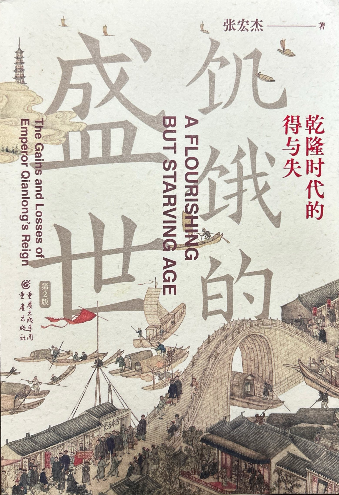
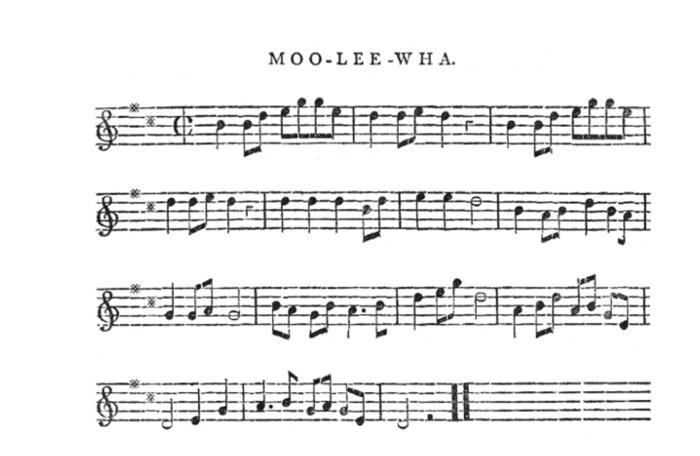

The so-called High Qing era
For a long time I took the so-called High Qing era (康乾盛世) at face value as a golden age. Only after years of reading and reflection did I come to see that it was nothing of the sort. As the Chinese historian 张宏杰 put it:

乾隆盛世是饥饿的盛世，光鲜的外表却掩盖不了内在的腐烂。乾隆时代给中华民族精神上造成的永久性创伤，远大于这一时的成就。乾隆王朝是中国历史上最缜密、最完善、最牢固也最残忍的专制统治，乾隆时代培养出来的民众只能做奴隶，自私、麻木、愚昧、冷漠、对公共事务毫不关心；乾隆制造了中国历史上最大规模的文字狱，彻底打断了士人的脊骨，从此清朝的知识分子再也没能站起来；乾隆时代的中国人是做稳了的奴隶，只许有胃肠，不许有头脑，因为只有这样，大清江山才能亿万斯年。乾隆之后的满清从此一蹶不振，正是乾隆亲手种下了日后百年耻辱的种子。
Here is my translation of his remarks:
The Qianlong Golden Age was a time of superficial prosperity; its bright exterior could not mask the internal decay. It was an era marked by hunger and struggle. The permanent spiritual trauma inflicted upon the Chinese nation during the Qianlong reign far outweighed its temporary accomplishments. The Qianlong dynasty enforced the most meticulous, comprehensive, entrenched, and cruel autocratic rule in Chinese history. The populace cultivated under Qianlong could only exist as slaves—selfish, numb, ignorant, apathetic, and utterly indifferent to public affairs. Qianlong orchestrated the largest literary inquisition in Chinese history, completely breaking the backbone of the literati; from then on, intellectuals of the Qing dynasty never stood up again. The Chinese people of the Qianlong era were firmly entrenched slaves, permitted to have stomachs but not minds, for only in this way could the Great Qing endure for eternity. After Qianlong, the Manchu Qing dynasty fell into irreversible decline. It was Qianlong himself who sowed the seeds of the century of humiliation to come.
From the Macartney Embassy to later observers
The Macartney Embassy was the first British diplomatic mission to China. It was a pivotal yet often overlooked historical event. While I have read extensively on this in Chinese, I have encountered fewer English sources—mainly the Wikipedia entry, the YouTube clip "The Macartney Expedition and the Global Economy," and a modern scholarly account available here.
Under the Qing dynasty's brutal regime, our ancestors developed a mindset known in Chinese as nú (奴). While normally translated as "slavery," nú refers more specifically to a psychological state: submissive obedience, numbness, timidity, apathy, and total indifference to public affairs. Words like "debased" and "servile" capture this mentality far more accurately.
Macartney's companion, Sir John Barrow, made some of the earliest and sharpest published observations in Travels in China (via Project Gutenberg):

While they are by nature quiet, passive, and timid, the state of society and the abuse of the laws by which they are governed, have rendered them indifferent, unfeeling, and even cruel.
...
In a government, where every man is liable to be made a slave, where every man is subject to be flogged with the bamboo at the nod of one of the lowest rank of those in office, and where he is compelled to kiss the rod that beats him or, which amounts to the same thing, to thank the tyrant on his knees for the trouble he has taken to correct his morals, high notions of honour and dignified sentiments are not to be expected.
...
It is sufficiently evident, that the heavy hand of power has completely overcome and moulded to its own shape the physical character of the people, and that their moral sentiments and actions are swayed by the opinions, and almost under the entire dominion, of the government.
In his own Journal of an Embassy from the King of Great Britain to the Emperor of China, Macartney bluntly observed that since the conquest by the northern Manchurian Tartars—at least over the past 150 years—China had seen no improvement or advancement, only regression; while Europe was advancing daily in the arts and sciences, the Chinese had actually degenerated into a "semi-barbarous" people.
I consider myself well-versed in Qing history. As a native Chinese, I read these accounts with deep admiration for the writers' perceptiveness—and utter shame for our own history.
Augustus Frederick Lindley, a mid-19th-century British adventurer and writer, recorded parallel observations regarding Qing rule in his book The History of the Taiping Revolution (via Project Gutenberg):
The grinding oppression of nearly two centuries had apparently obliterated all that was good and noble in the land, and the debasing influence of the Manchoo invaders seemed likely to consummate the entire destruction of the moral, social, and political condition of the Chinese.
He further described the condition of the Chinese people under Qing rule:
From the day these Tartars came into the country, China has been steadily deteriorating, and now the people may best be likened to herds of grovelling swine, living merely for the day, stultified in intellect by the most degrading superstition.
From infancy the people have become habituated to scenes of blood and torture, similar to those inflicted upon their ancestors during the last two centuries by the Tartar conquerors. Made callous and degraded by the ceaseless persecution of their authorities; unnaturally branded with the shaven-headed badge of slavery; their spirit broken and debased by a system of grinding tyranny; their lives and property at the mercy of the most merciless officials in existence ... seclusion is their salvation; too surely they know that their power consists in the weakness, ignorance, superstition, and degradation of their Chinese slaves. ... One of the most remarkable contrasts between the Ti-pings and their enslaved countrymen ... One presents a type of the whole—a dull, apathetic countenance, without expression or intelligence, except what resembles the half-cunning, half-fearful manner of slaves ... Where you would see the servile Tartar-subdued Chinamen continually cringing ...
Macartney's two assessments
Lord Macartney himself famously left two incisive assessments of the Qing Empire in his Journal of an Embassy from the King of Great Britain to the Emperor of China (later published in Volume 2 of Some Account of the Public Life, and a Selection from the Unpublished Writings, of the Earl of Macartney, available on Archive.org).
The first quote appears in full on pages 412–413. Here, Macartney examines the arrogance of Chinese officials toward the outside world, hypothesizing that it stemmed from a time when China was indeed more advanced than its neighbors:
When Marco Polo, the Venetian, visited China in the thirteenth century, it was about the time of the conquest of China by the western or Mongol Tartars, with Kublai-khan, a grandson of Gengis-khan, at their head. A little before that period the Chinese had reached their highest pitch of civilization; and no doubt they were then a very civilized people in comparison of their Tartar conquerors, and their European contemporaries; but not having improved and advanced forward, or having rather gone back, at least for these hundred and fifty years past, since the last conquest by the northern or Mantchou Tartars, whilst we have been every day rising in arts and sciences, they are actually become a semi-barbarous people in comparison with the present nations of Europe. Hence it is that they retain the vanity, conceit, and pretensions that are usually the concomitants of half-knowledge; and that, though during their intercourse with the embassy, they perceived many of the advantages we had over them, they seemed rather surprised than mortified, and sometimes affected not to see what they could not avoid feeling. In their address to strangers they are not restrained by any bashfulness or mauvaise honte [“false modesty”–ed.], but present themselves with an easy confident air, as if they considered themselves the superiors, and that nothing in their manners or appearance could be found defective or inaccurate.
The second quote appears on page 398, where Macartney discusses the potential fallout of a conflict between Britain and China, predicting that internal decay would eventually collapse the empire from within—likening the Qing state to an aging warship:
But all these inconveniences and mischiefs, which I have stated as objects of apprehension, may happen in the common course of things without any quarrel or interference on our part. The empire of China is an old crazy first-rate man of war, which a fortunate succession of able and vigilant officers has contrived to keep afloat for these hundred and fifty years past; and to overawe their neighbors, merely by her bulk and appearance; but whenever an insufficient man happens to have the command upon deck, adieu to the discipline and safety of the ship. She may perhaps not sink outright; she may drift some time as a wreck, and will then be dashed in pieces on the shore; but she can never be rebuilt on the old bottom.
Sir George Thomas Staunton—who accompanied the Macartney Embassy as a young page and later translated the Qing legal code—wrote in the Preface to Ta Tsing Leu Lee (1810) on the fundamental governing principle of the Chinese imperial system:
The vital and universally operating principle of the Chinese government is the duty of submission to parental authority, whether vested in the parents themselves, or in their representatives, and which, although usually described under the pleasing appellation of filial piety, is much more properly to be considered as a general rule of action, than as the expression of any particular sentiment of affection.
Sidenote: Moo-Lee-WHA(茉莉花)
Sir John Barrow was among the first to introduce the popular Chinese song Moo-lee (茉莉花) to the West. In Travels in China he wrote:
I never heard but one single Chinese who could be said to sing with feeling or plaintiveness. Accompanied with a kind of guitar, he sung the following air in praise of the flower Moo-lee, which it seems is one of the most popular songs in the whole country. The simple melody was taken down by Mr. Hittner, and I understand has been published in London, with head and tail-pieces, accompaniments, and all the refined arts of European music; so that it ceases to be a specimen of the plain melody of China. I have therefore given it in its unadorned state, as sung and played by the Chinese, together with the words of the first stanza, and their literal translation.

Barrow thus preserved both the plain melody and the original Chinese text with a literal English translation in his book.
Primary Sources Cited
- Barrow, John. Travels in China (1804).
- Lindley, Augustus Frederick. Ti-Ping Tien-Kwoh: The History of the Ti-Ping Revolution (1866).
- Macartney, George. Journal of an Embassy from the King of Great Britain to the Emperor of China (1792–1794), collected in Some Account of the Public Life, and a Selection from the Unpublished Writings, of the Earl of Macartney, Vol. 2 (1807).
- Staunton, George Thomas (trans.). Ta Tsing Leu Lee (1810). preface xviii–xix.
Related Discussions (Originated by the Author)
- What were Lord Macartney's original words about Chinese under the Qianlong Emperor's brutal regime in 18th century? (History Stack Exchange, 2021)
- The words to describe a slave's mentality (English Language & Usage Stack Exchange, 2024)